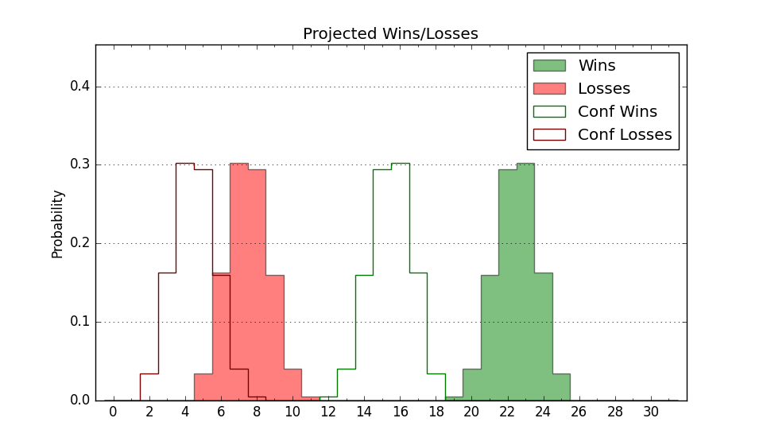

| Home | Game Probabilities | Conferences | Preseason Predictions | Odds Charts | NCAA Tournament |
| City: | Hamden, Connecticut | |
| Conference: | Metro Atlantic (1st)
| |
| Record: | 11-2 (Conf) 18-5 (Overall) | |
| Ratings: | Comp.: -1.3 (178th) Net: -1.2 (177th) Off: 104.2 (185th) Def: 105.4 (185th) SoR: 5.1 (99th) |
| Remaining | ||||||
|---|---|---|---|---|---|---|
| Date | Opponent | Win Prob | Pred. | |||
| 2/18 | Niagara (261) | 77.9% | W 83-73 | |||
| 2/23 | Fairfield (181) | 66.5% | W 81-76 | |||
| 2/25 | @ Rider (284) | 57.9% | W 78-76 | |||
| 3/1 | @ Iona (184) | 37.1% | L 74-78 | |||
| 3/3 | Siena (359) | 95.1% | W 82-61 | |||
| 3/7 | Marist (204) | 70.3% | W 71-65 | |||
| 3/9 | @ Saint Peter's (225) | 44.6% | L 66-68 | |||
| Previous | Game Score | |||||
| Date | Opponent | Win Prob | Result | Off | Def | Net |
| 11/10 | Central Connecticut (239) | 75.3% | W 74-70 | -6.9 | -0.5 | -7.5 |
| 11/13 | @Massachusetts (93) | 16.3% | L 81-102 | 10.2 | -20.9 | -10.7 |
| 11/17 | @Army (327) | 70.4% | W 67-58 | -1.6 | 8.6 | 7.0 |
| 11/19 | Albany (269) | 79.5% | W 85-82 | -4.6 | -4.1 | -8.7 |
| 11/26 | Stonehill (358) | 95.1% | W 80-69 | 7.0 | -9.8 | -2.9 |
| 12/1 | @Canisius (241) | 47.5% | L 73-93 | -7.5 | -20.5 | -28.0 |
| 12/3 | @Niagara (261) | 50.9% | W 75-68 | -13.7 | 18.9 | 5.2 |
| 12/8 | Navy (319) | 88.2% | W 71-68 | -15.8 | 1.5 | -14.3 |
| 12/11 | Yale (87) | 37.5% | L 66-73 | 0.2 | 0.4 | 0.5 |
| 12/18 | @Holy Cross (357) | 84.7% | W 77-57 | -2.2 | 18.7 | 16.5 |
| 12/21 | @Lafayette (298) | 61.5% | W 78-60 | 14.2 | 12.0 | 26.1 |
| 12/30 | @Florida (37) | 7.0% | L 72-97 | -6.8 | -1.4 | -8.3 |
| 1/5 | Rider (284) | 82.4% | W 88-84 | 2.0 | -7.1 | -5.1 |
| 1/7 | Manhattan (330) | 89.8% | W 76-59 | -17.9 | 14.1 | -3.8 |
| 1/12 | @Marist (204) | 41.0% | W 66-55 | 1.0 | 18.2 | 19.2 |
| 1/19 | @Siena (359) | 85.1% | W 82-70 | 5.8 | -7.5 | -1.7 |
| 1/21 | Iona (184) | 66.8% | W 91-87 | 18.2 | -19.6 | -1.4 |
| 1/25 | Mount St. Mary's (228) | 73.4% | W 79-65 | 1.8 | 13.5 | 15.4 |
| 1/28 | @Fairfield (181) | 36.8% | W 66-64 | -8.2 | 18.9 | 10.7 |
| 2/2 | @Manhattan (330) | 72.1% | W 77-71 | 3.8 | -4.5 | -0.7 |
| 2/4 | Canisius (241) | 75.5% | W 88-63 | 12.4 | 9.0 | 21.4 |
| 2/8 | Saint Peter's (225) | 73.3% | W 84-73 | 17.2 | -8.5 | 8.7 |
| 2/10 | @Mount St. Mary's (228) | 44.7% | L 79-96 | -0.4 | -23.0 | -23.4 |
| Stats & Trends | |||||
|---|---|---|---|---|---|
| Current | Day | Week | Month | Season | |
| Composite | -1.3 | -0.0 | -0.8 | +2.0 | +4.3 |
| Comp Rank | 178 | -- | -7 | +24 | +41 |
| Net Efficiency | -1.2 | -0.0 | -0.9 | +1.7 | -- |
| Net Rank | 177 | -1 | -8 | +28 | -- |
| Off Efficiency | 104.2 | -0.0 | +0.8 | +3.0 | -- |
| Off Rank | 185 | +1 | +18 | +28 | -- |
| Def Efficiency | 105.4 | -0.0 | -1.7 | -1.3 | -- |
| Def Rank | 185 | -1 | -26 | -1 | -- |
| SoS Rank | 351 | -- | +6 | +1 | -- |
| Exp. Wins | 22.5 | -0.0 | -0.3 | +2.4 | +6.0 |
| Exp. Conf Wins | 15.5 | -0.0 | -0.3 | +2.4 | +4.3 |
| Conf Champ Prob | 90.9 | -0.5 | -2.1 | +57.3 | +75.5 |

| Advanced Stats | ||
|---|---|---|
| Stat | Value | Rank |
| Off Eff FG % | 0.481 | 261 |
| Off Ast Ratio | 0.135 | 211 |
| Off ORB% | 0.301 | 104 |
| Off TO Rate | 0.151 | 199 |
| Off FT Ratio | 0.312 | 220 |
| Def Eff FG % | 0.518 | 220 |
| Def Ast Ratio | 0.152 | 264 |
| Def ORB% | 0.277 | 185 |
| Def TO Rate | 0.145 | 200 |
| Def FT Ratio | 0.324 | 173 |